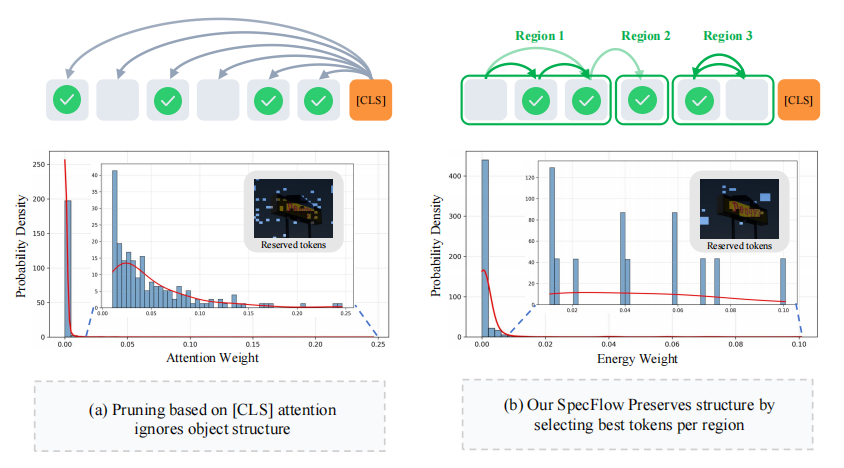
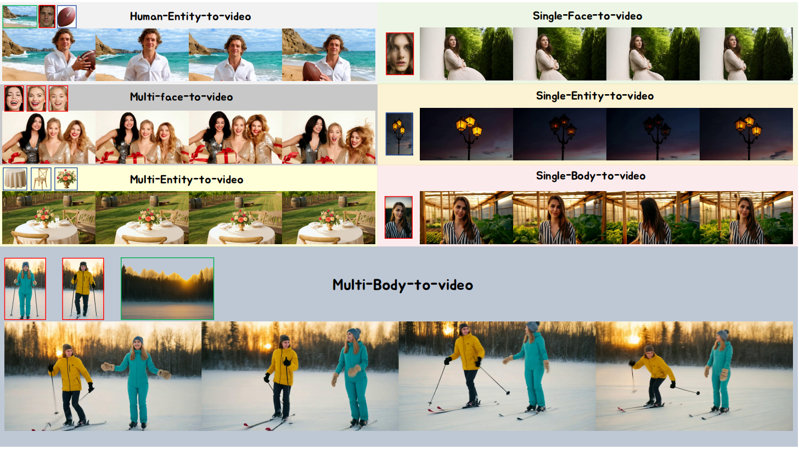
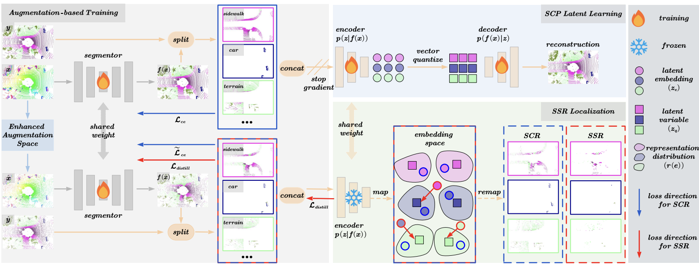
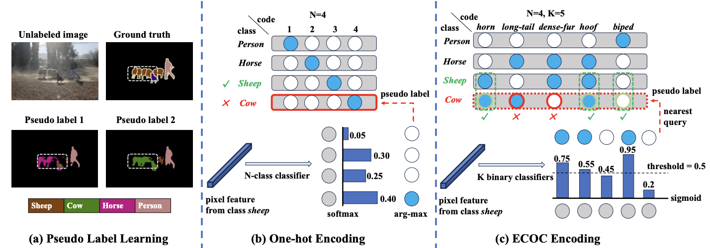
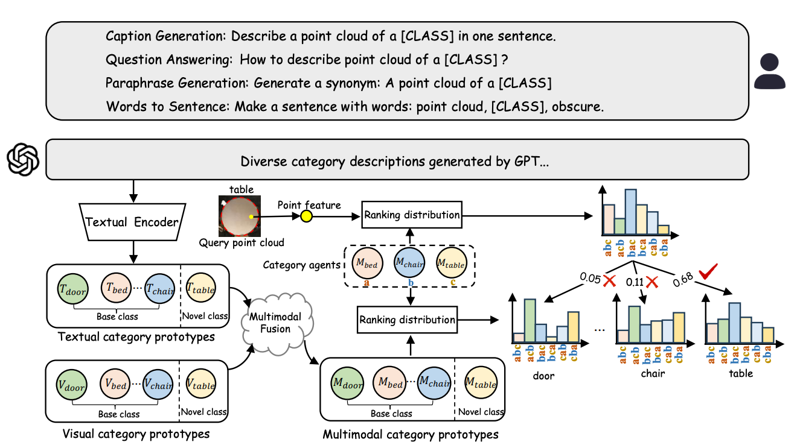
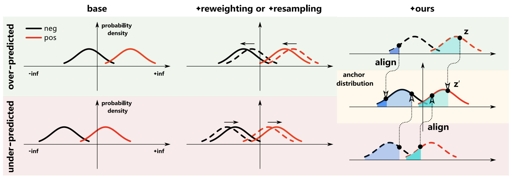
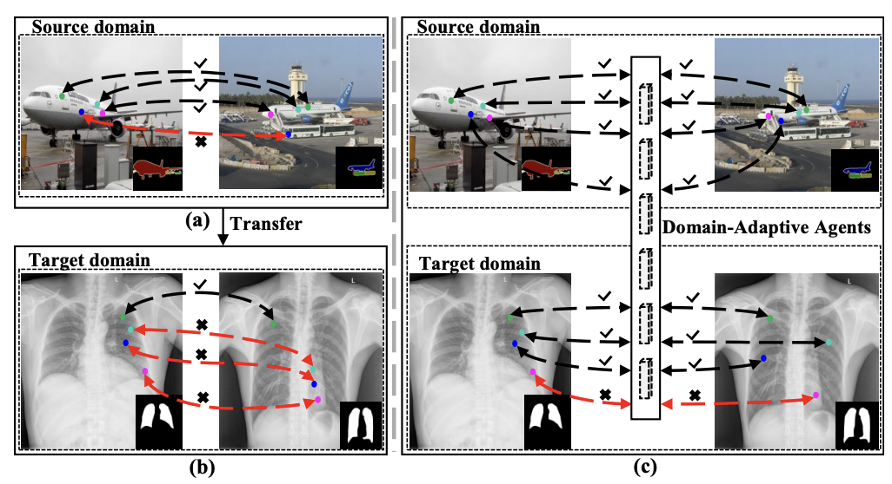
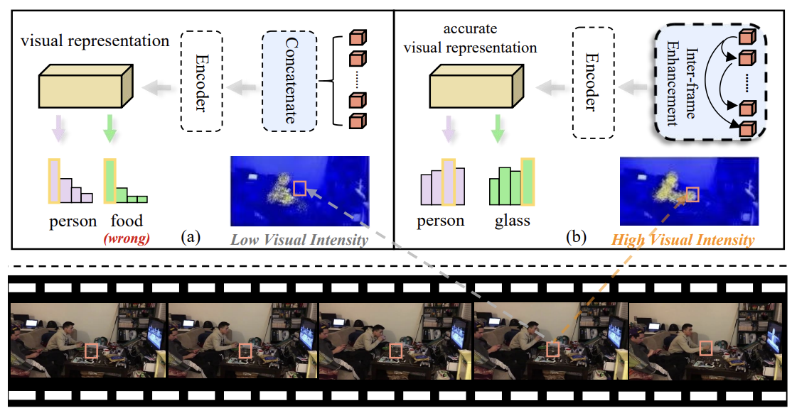
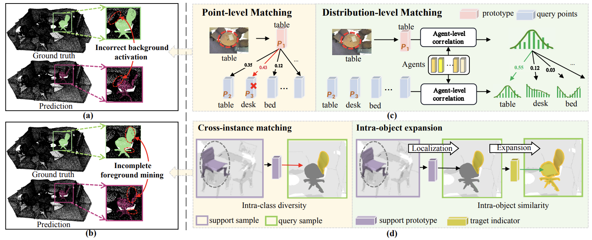
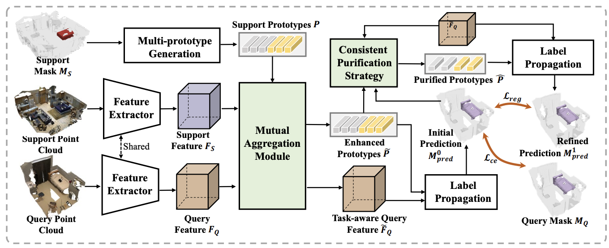

{kind=link}

Spectral Heat Flow for Conservative Token Condensation in Vision-Language Models
Zhaoyang Li, Yanjun Li, Wangkai Li, Yujia Chen, Tianzhu Zhang
ICML 2026
I am a Ph.D. candidate in the Department of Automation at the University of Science and Technology of China (USTC), advised by Prof. Tianzhu Zhang. I received my bachelor's degree in Computer Science and Technology from Central South University in 2022.
My research interests include video generation, efficient vision-language models, and world model. I am especially interested in building visual and multimodal systems that remain reliable under limited supervision, domain shift, and complex real-world conditions.
I have published papers at ICLR, ICML, ICCV, CVPR, ECCV, NeurIPS, and IJCAI. I also worked as an AIGC algorithm intern at ByteDance with Kai Su and Zehuan Yuan, focusing on subject-to-video generation and large-scale model post-training.
I am currently a research intern in the World Models team at AceRobotics, supervised by Dr. Fei Wang. I expect to graduate in Fall 2027 and welcome opportunities to connect.

Spectral Heat Flow for Conservative Token Condensation in Vision-Language Models
Zhaoyang Li, Yanjun Li, Wangkai Li, Yujia Chen, Tianzhu Zhang
ICML 2026

BindWeave: Subject-Consistent Video Generation via Cross-Modal Integration
Zhaoyang Li, Dongjun Qian, Kai Su, Qishuai Diao, Xiangyang Xia, Chang Liu, Wenfei Yang, Tianzhu Zhang, Zehuan Yuan
ICLR 2026

Adaptive Augmentation-Aware Latent Learning for Robust LiDAR Semantic Segmentation
Wangkai Li, Zhaoyang Li, Yuwen Pan, Rui Sun, Yujia Chen, Tianzhu Zhang
ICLR 2026

Towards Robust Pseudo-Label Learning in Semantic Segmentation: An Encoding Perspective
Wangkai Li, Rui Sun, Zhaoyang Li, Tianzhu Zhang
NeurIPS 2025

Generalized Few-Shot Point Cloud Segmentation via LLM-Assisted Hyper-Relation Matching
Zhaoyang Li, Yuan Wang, Guoxin Xiong, Wangkai Li, Yuwen Pan, Tianzhu Zhang
ICCV 2025

Balanced Learning for Domain Adaptive Semantic Segmentation
Wangkai Li, Rui Sun, Bohao Liao, Zhaoyang Li, Tianzhu Zhang
ICML 2025

Dual-Agent Optimization Framework for Cross-Domain Few-Shot Segmentation
Zhaoyang Li, Yuan Wang, Wangkai Li, Tianzhu Zhang, Xiang Liu
CVPR 2025

Unbiased Video Scene Graph Generation via Visual and Semantic Dual Debiasing
Yanjun Li, Zhaoyang Li, Honghui Chen, Lizhi Xu
CVPR 2025

Localization and Expansion: A Decoupled Framework for Point Cloud Few-Shot Semantic Segmentation
Zhaoyang Li, Yuan Wang, Wangkai Li, Rui Sun, Tianzhu Zhang
ECCV 2024

Aggregation and Purification: Dual Enhancement Network for Point Cloud Few-Shot Segmentation
Guoxin Xiong, Yuan Wang, Zhaoyang Li, Wenfei Yang, Tianzhu Zhang, Xu Zhou, Shifeng Zhang, Yongdong Zhang
IJCAI 2024